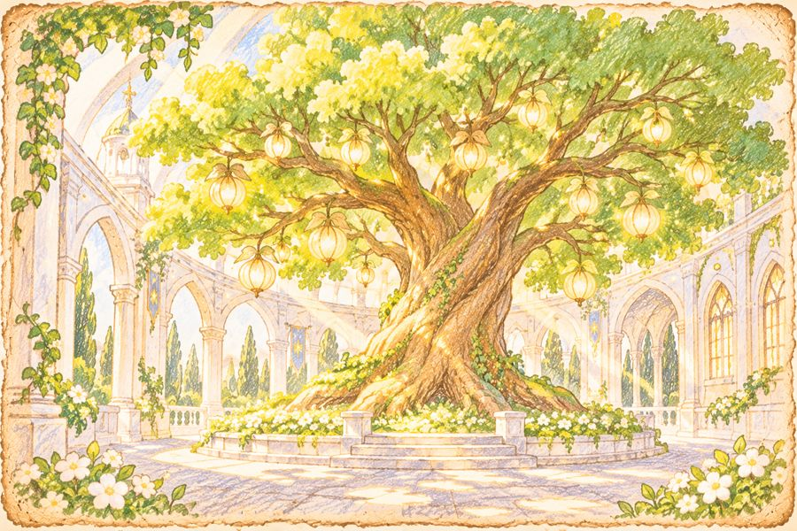
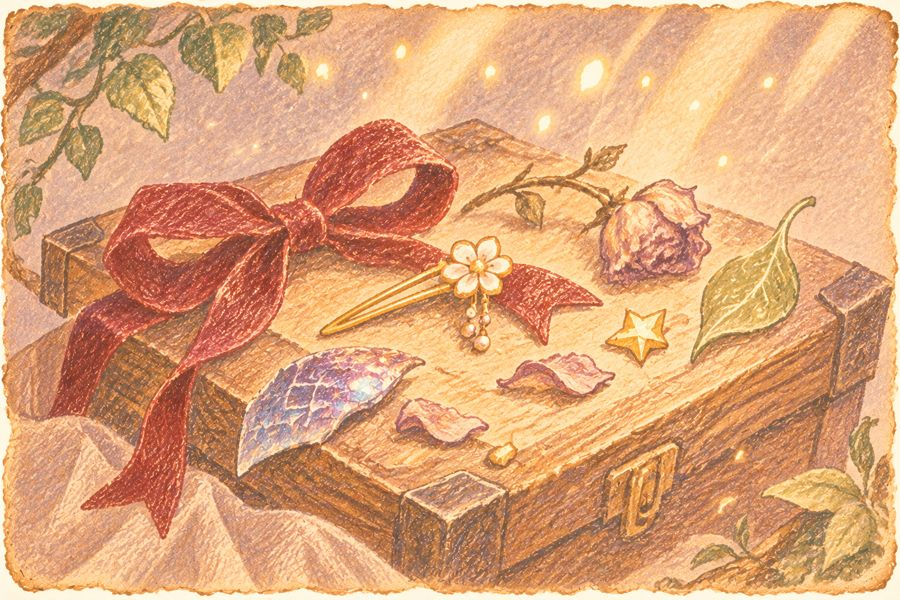
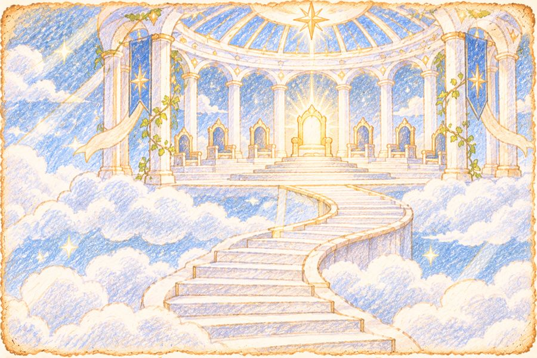
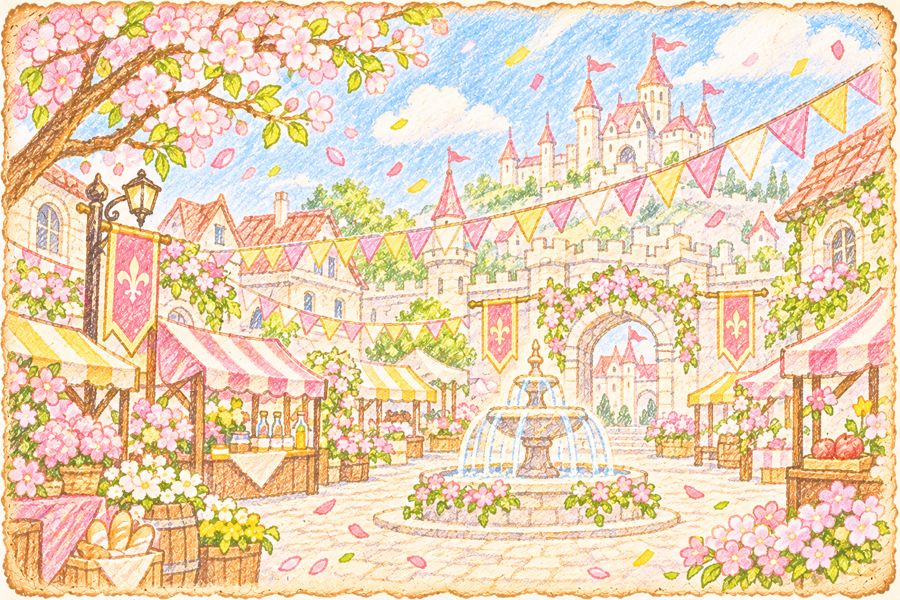
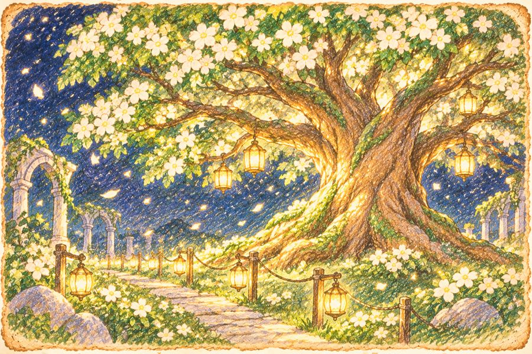
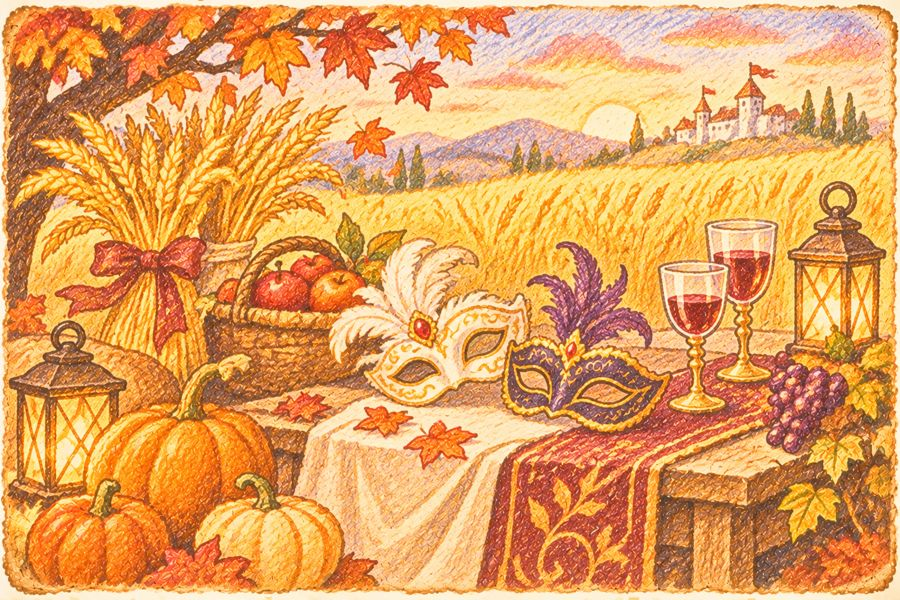
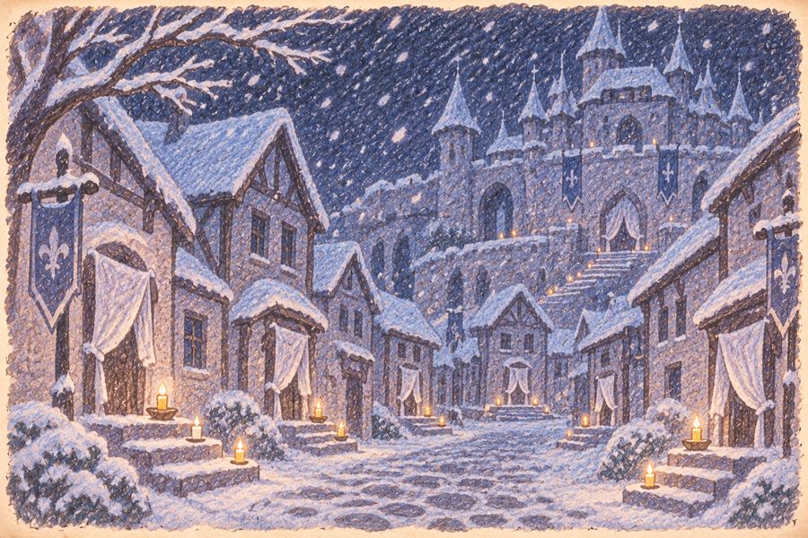
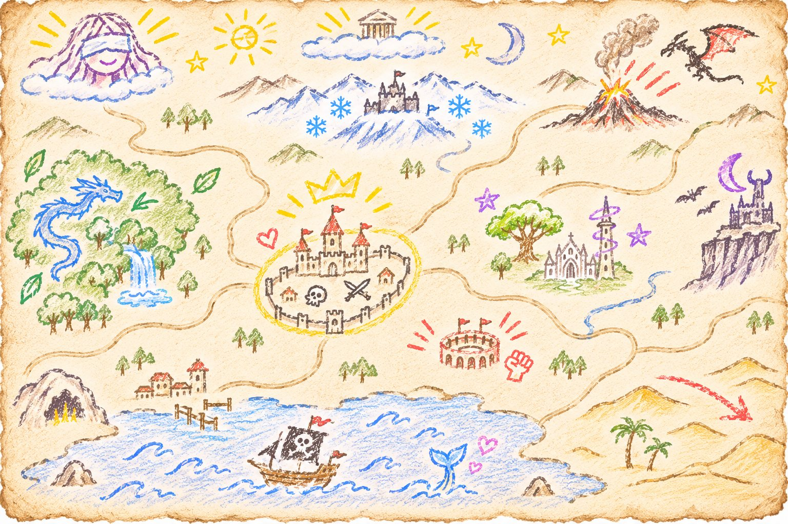

침묵의 밤
300년 전 어느 밤, 모든 종족의 여자가 하룻밤 사이에 빛이 되어 사라졌다. 이 저주를 내린 것은 신들의 신 에온이며, 왜 그랬는지는 오직 에온만이 알고 있다.

300년 전, 세상의 모든 여자가 빛이 되어 사라져 버렸다.
남자들만 남은 아르셀 왕국에 300주기 기일이 다가오고 있다. 그리고 기일을 꼭 60일 앞둔 가을밤, 하늘에서 당신이 떨어진다.
이야기의 무대는 대륙 엘레시아의 아르셀 왕국이다. 여자가 사라진 지 300년이 지나, 지금은 남자들만 남아 살아가고 있다.
300년 전 어느 밤, 모든 종족의 여자가 하룻밤 사이에 빛이 되어 사라졌다. 이 저주를 내린 것은 신들의 신 에온이며, 왜 그랬는지는 오직 에온만이 알고 있다.

대신전 안뜰에는 거대한 생명나무가 서 있다. 여자가 사라진 뒤로 아이는 이 나무에서 사내아이로만 태어나고 있으며, 남자끼리 사랑하는 것도 이제는 흔한 일이 되었다.

300년 넘게 살아온 존재들만이 아직 여자를 기억하고 있다. 마탑주와 용, 엘프 왕, 인어, 뱀파이어, 그리고 신들이 그렇다. 도감에서는 이름 옆에 ◆로 표시해 두었다.

구름 계단을 올라가면 신들의 땅이 나온다. 신이 데려가 주지 않으면 들어갈 수 없는 곳으로, 만신전의 가장 높은 왕좌는 언제나 비어 있다.
당신은 300년 만에 나타난 단 한 명의 여자가 된다. 모두가 당신을 저주를 풀 열쇠라고 믿고, 저마다의 이유로 당신을 손에 넣으려 한다.
왕실은 보호를 핑계로 당신을 감시하고, 신전은 당신이 성녀인지 이단인지 심사하려 한다. 마탑에서는 매일같이 연구 신청서가 날아오고, 뒷골목에는 당신 몸에 현상금이 붙었다. 용과 악마 역시 저마다의 속셈으로 당신을 노리고 있다.
당신은 이 세계에 사는 평범한 사내가 된다. 직접 정한 신분에 따라 이야기가 흘러간다.

봄 · 건국제왕도 전체가 들썩이는 축제가 열린다
여름 · 개화제생명나무에 꽃이 피는 날을 기린다
가을 · 수확제수확을 축하하고 가면 무도회가 열린다
겨울 · 기일12월 21일, 1년 중 밤이 가장 긴 날. 왕국 전체가 불을 끄고 침묵한다. 올해로 300주기를 맞는다.시작 설정에서 세 가지 모드 중 하나를 고를 수 있다. 이야기는 300년 10월 22일 밤에 시작되고, 어느 모드든 기일인 12월 21일까지 남은 시간은 60일이다.
당신은 에온과 내기를 하게 된다. 기일 밤에 바엘이 생명나무를 불태우려 하는데, 이를 막아 내면 여자들이 돌아오고, 막지 못하면 당신도 빛이 되어 사라진다.
당신은 악마 벨리안과 계약을 맺었다. 표적으로 고른 사내가 가장 아끼는 보물을 기일까지 빼앗아 바쳐야 하며, 정체를 들키면 영혼을 잃게 된다.
시종이나 용의 아내, 포로처럼 원하는 역할을 정해서 시작한다. 내기나 계약은 원할 때만 이야기에 끌어들이면 된다.
가고 싶은 곳을 말하면 바로 도착한다. 왕좌의 방부터 해적선 갑판, 에온의 흰 공허까지.

서른넷의 사내가 당신을 기다리고 있다.